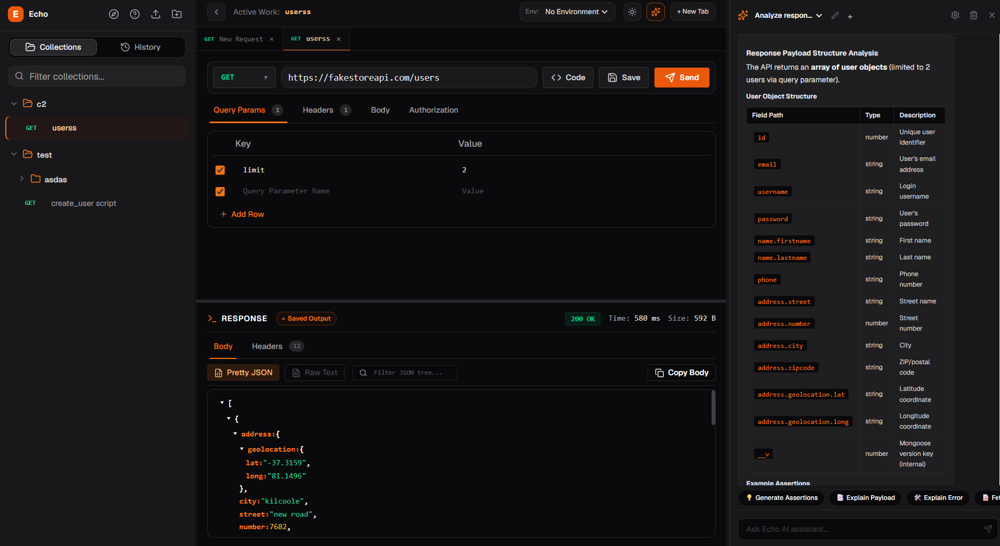

Lightning-fast, local-first API client built with Tauri and Rust. Experience the raw speed of native code without browser bloat.

Stop fighting with browser security during local development. Echo's Rust-powered backend executes requests natively, bypassing the browser's sandbox entirely. No plugins, no proxy, no pain.
The built-in AI assistant doesn't just chat—it understands your workspace. It analyzes headers, request bodies, and responses to help you debug or generate code in seconds.
Generate copy-pasteable snippets for **cURL**, **Python**, **JavaScript**, and **Rust** instantly. Echo resolves all your environment variables so the code is ready to ship.
Designed for speed, security, and developer happiness.
Tired of CORS errors during development? Echo uses a native Rust backend to bypass browser restrictions effortlessly.
Your data stays on your machine. Echo uses SQLite to store history, collections, and environments locally.
Generate tests, document endpoints, or fix headers with our built-in AI assistant that understands your request context.
Organize your APIs with recursive folders. Echo handles complex hierarchies and keeps your workspace tidy.
Switch between Prod, Staging, and Dev instantly. Resolve variables dynamically in URLs, headers, and bodies.
Seamlessly import and export Postman collections. Migrate your existing workflow in seconds.
| Feature | Echo | The "Others" |
|---|---|---|
| Data Storage | Local SQLite | Proprietary Cloud |
| CORS Restrictions | None (Native) | Depends on Browser |
| AI Integration | Context-Aware | None / Paid Add-on |
| Performance | Rust Engine | Electron Bloat |
Join thousands of developers building better APIs with the power of Tauri and Rust.